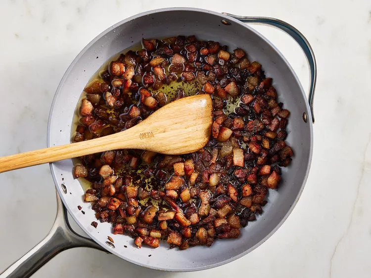
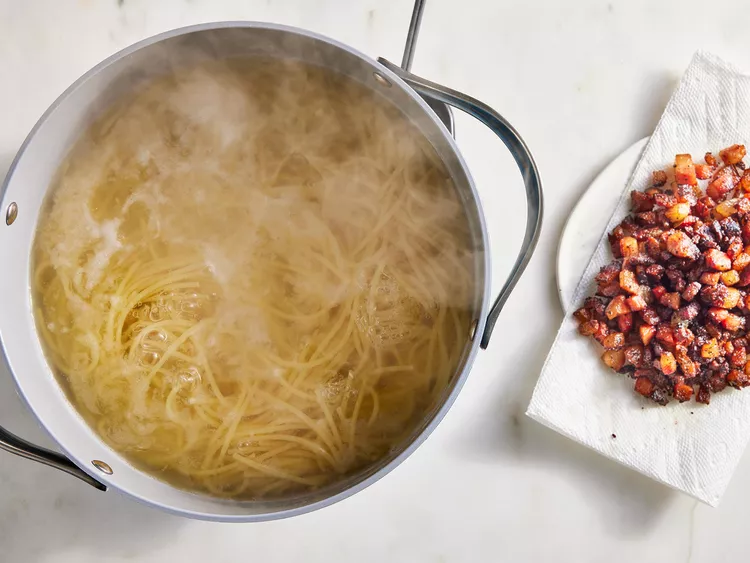
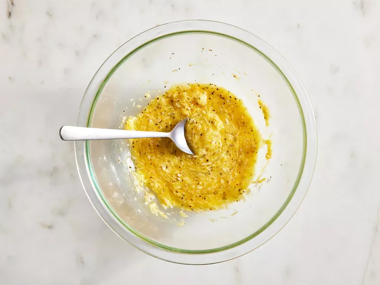

Spaghetti alla Carbonara

Carbonara is made with guanciale (cured pork), eggs, Pecorino Romano cheese, spaghetti pasta, and lots of black pepper. Italians don't add extra ingredients like cream, milk, garlic, or onions. Try this recipe if you want to make an authentic, creamy carbonara that comes straight from Italy, where I live. Buon appetito!
Ingredients
- 2 teaspoons olive oil
- 1 pound guanciale (cured pork cheek), diced
- 1 (16 ounce) package spaghetti
- 3 large eggs
- 10 tablespoons grated Pecorino Romano cheese, divided
- salt and freshly ground black pepper to taste
Instructions:
- Step 1
Heat olive oil in a large skillet over medium heat; add guanciale (see Cook's Note). Cook, turning occasionally, until evenly browned and crispy, 5 to 10 minutes. Remove from heat and drain on paper towels. - Step 2
Bring a large pot of salted water to a boil. Cook spaghetti in the boiling water, stirring occasionally until tender yet firm to the bite, about 9 minutes. Drain and return to the pot. Let cool, stirring occasionally, about 5 minutes. - Step 3
Whisk eggs, 1/2 of the Pecorino Romano cheese, and some black pepper in a bowl until smooth and creamy. - Step 4
Pour egg mixture over pasta, stirring quickly, until creamy and slightly cooled. Stir in guanciale. - Step 5
Top with remaining Pecorino Romano cheese and more black pepper.


